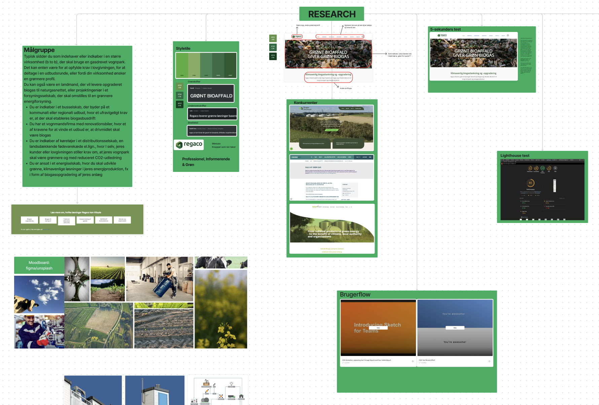
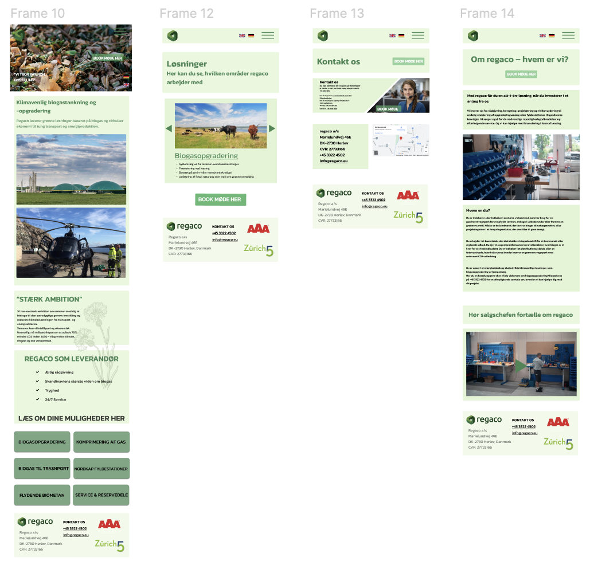
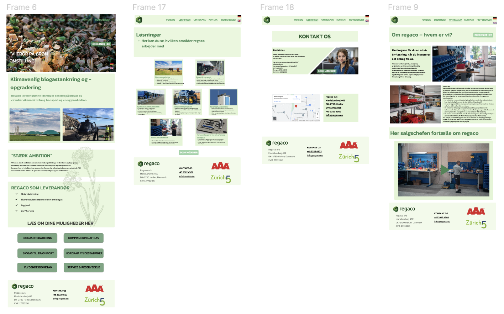
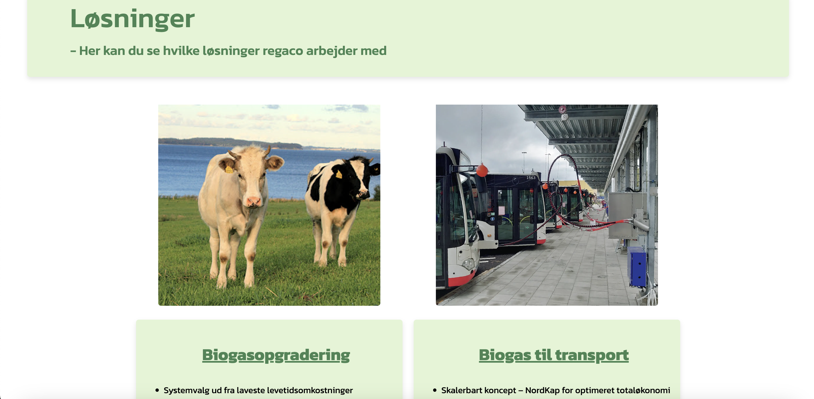
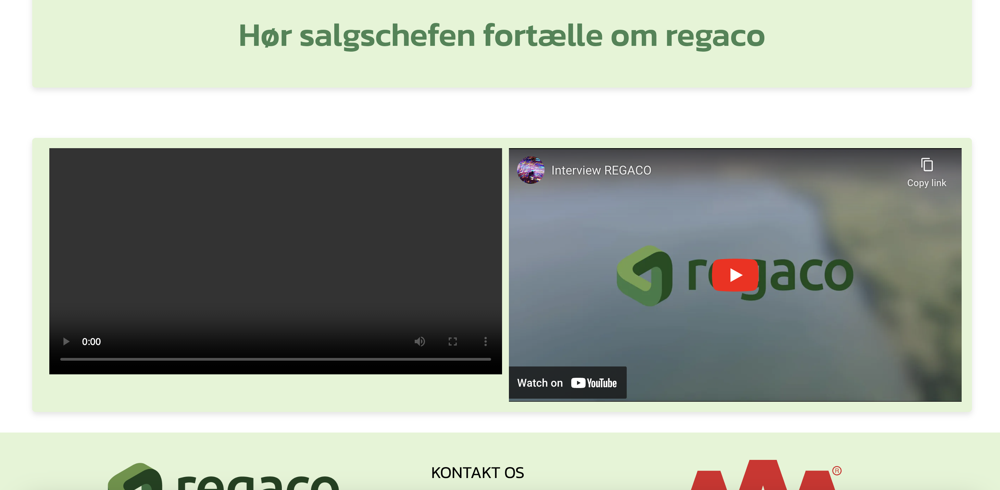
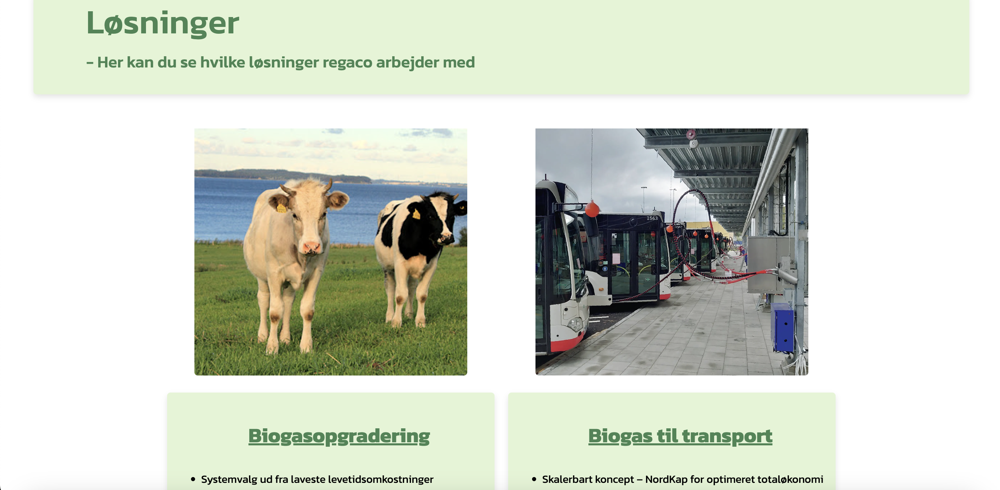
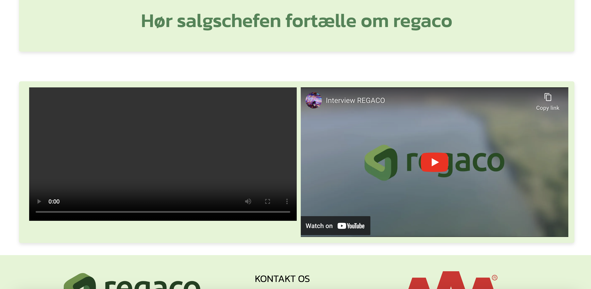

TEMA 5

05_videosite
FORMÅL MED TEMA
Formålet med Tema 5 er at give en grundlæggende forståelse i indholdsproduktion, som dækker præproduktion, produktion og postproduktion. Jeg lærte at bruge et kamera for første gang, og eksterne mikrofoner til lyd, og redigere det hele med Premiere Pro. Jeg lærte at lave mindre indholdsproduktioner selvstændigt, hvilket er vigtigt for at kunne kommunikere professionelt med kunder. Man bliver også introduceret til animeret vektorgrafik med Lottiefiles.
Man lærer grundlæggende faglige begreber inden for indholdsproduktion og skal bruge færdigheder fra tidligere temaer til at redesigne en virksomheds hjemmeside.
PASSIONSSITE
Til passionssitet skulle vi øve os i interviewteknikker, videoredigering i Premiere Pro og forbedre vores layoutfærdigheder.
Vi arbejdede i grupper af to, hvor vi interviewede den samme person, men hver især redigerede vores egen video og lavede vores eget passionssite med det samme råmateriale.
Sammen med mit gruppemedlem Ida valgte jeg at interviewe min roomie, som har en stor kærlighed for mad.
Link
Passionssite projektVIDEOSITE
TEMA
I dette tema skal vi redesigne en selvvalgt virksomheds website. Vi laver et kodet website med tekst, fotos, LottieFiles og video. Det er et gruppeprojekt, hvor vi dokumenterer vores proces. Over fem uger planlægger vi, samarbejder med virksomheden, udfører research og idéudvikling, laver en digital prototype, producerer indhold, koder websitet, tester det og præsenterer det færdige resultat.
REGACO
Vi har redesignet Regaco's website, der fokuserer på at omstille store virksomheder til bæredygtige biogasløsninger. Vi har omstruktureret menuen, tilføjet visuelt indhold og generelt ryddet op på den ellers rodet side. Vi har skabt en mere overskuelig og engagerende platform. Målet er at præsentere Regaco som en professionel og grøn virksomhed, der ikke blot informerer, men også inspirerer til bæredygtig handling.
Link
Virksomhedssite projektRESEARCH
MOBILE
DESKTOP
SKÆRMBILLEDER
 


